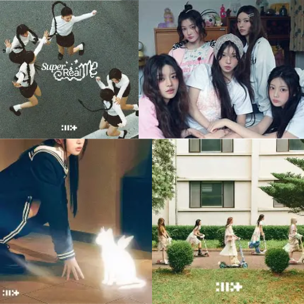
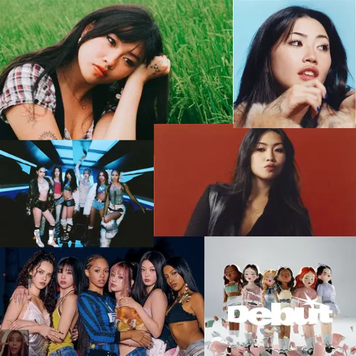
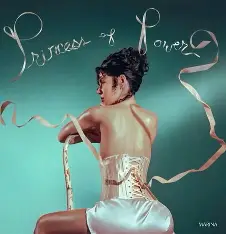
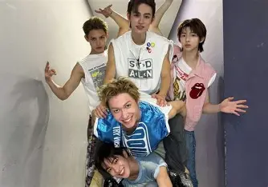

𝜗ৎ Laufey - Jazz 𝜗ৎ

Een van mijn favourite artiesten is: Laufey!!
Ik hou van haar muziek sinds het rustgevend is, het gaat vaak ook over haar persoonlijke ervaringen met het leven. Ze maakt vooral jazz muziek maar heeft ook wat pop nummers⋆˚꩜｡.
Hier is een tabel met Laufey's discografie:
| Album Titel | Favourite nummer(s) |
|---|---|
| Typical Of Me | Magnolia, James |
| Everything I Know About Love | Fragile, Just Like Chet, Everything I Know About Love, Hi |
| Bewitched | Dreamer, Second Best |
| Bewitched: The Goddess Edition | Bored, Goddes |
| A Matter Of Time | Castle In Hollywood, Forget-Me-Not, Tough Luck, Mr. Ecletic |
| Collab/Singles | Let You Break My Heart Again, A Night To Remember |
𝜗ৎ ILLIT - Kpop 𝜗ৎ

Mijn Favourite Kpop groep is ILLIT!!
De namen van de groepsleden zijn: Iroha, Wonhee, Moka, Yunah en Minju۶ৎ
Ik hou van hun muziek sinds het zo energiek en leuk is om naar te luisteren, ik vind ook dat ze super goed dansen en zingen wat het nog leuker maakt om naar te kijken tijdens hun preformances.
Hier is een tabel met ILLIT's discografie:
| EP Titel | Favourite nummer(s) |
|---|---|
| Toki Yo Tomare | Toki Yo Tomare, Toppnig, Almond Chocolate |
| bomb | Billyeoon Goyangi (Do the Dance), Jellyous, Oops! |
| I'LL LIKE YOU | Cherish (My Love), Tick-Tack/td> |
| SUPER REAL ME | Magnetic, Midnight Fiction, Lucky Girl Syndrome |
𝜗ৎ Overig 𝜗ৎ
  Andere artiesten die ik ook leuk vind zijn:
- Beabadoobee
- Katseye
- Marina
- Cortis
- XLOV
- aespa
- LE SSERAFIM
- Ik heb er nog zoveel meer, maar anders komt hier geen eind aan...